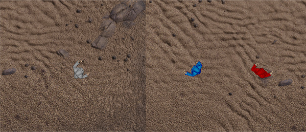
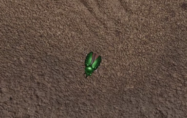

Grumpy Visitors first update. Winter progress
- 666 words
- 4 min
Though this winter wasn't my most active season, some interesting updates worth highlighting were merged into master. It was mostly the graphics that drew my attention, so this update will also be rich with screenshots.
But first of all, I'd like to show off some numbers.
Commits made: 39
Pull requests merged: 5
Code changes: 5,774++ 4,600--
Issues submitted to Amethyst: 2 (1 solved)
Pull requests sent to Amethyst: 2 (1 merged)
It'll be insteresting to see how those'll change in the next updates.
Painting mage sprites
So the first thing I started working on in winter was painting my mage sprites. My original sprites render a mage in a white robe. As Grumpy Visitors is a multiplayer game, I thought it's important to make players' characters distinguishable. So I decided to make several variants of the sprite set.. with a shader!
And the shader turned out to be not very ugly.
void main() {
vec3 brightest_white = vec3(0.76);
vec3 darkest_white = vec3(0.57); // These two variables aren't
vec3 white_diff = brightest_white - darkest_white; // used, but nevermind.
vec4 color = texture(albedo, vertex.tex_uv);
if (color.a == 0.0) {
discard;
}
if (abs(color.r - color.g) < 0.02 && abs(color.g - color.b) < 0.02) {
out_color = vec4(
vertex.paint_color.rgb - (brightest_white - color.rgb),
color.a
);
} else {
out_color = color;
}
}
Spell particles
There's still an old screenshot on my github front page where you can see how the spell particle looked: [the image]
Yes, it's just a red dot! Unacceptable, right? Here I thought digging into shaders would be a nice idea again.
![[the image]](https://github.com/amethyst/grumpy_visitors/blob/b0edb94c33d10b56b99df0b5bc88cce86fd8da97/header_screenshot.png){kind=link}
So I wrote a very basic particle system,
then made it a bit more complex
and finally implemented a new RenderGroup and drew a missile.
The code won't contain the full history of iterations though, luckily I shot some of them on a screen.. capture.. thing.
Beware!! I'm an evil man who doesn't stop the radio before recording.
And the final result with higher resolution:

New animations
Ok, this is almost the end.. That's more of a promise to myself.
Several commits before you could observe that when several missiles landed on a beetle, a beetle disappeared. That wasn't very nice looking.. So I decided to take the animations from my dusty sprites folder and finally add them to the game. This also required refactoring some of my animation systems, which I was procrastinating to do before, so it was a good call for two reasons.
Now the game features tired beetles:
 (and I'm also too tired to make a proper gif, sry)
Polishing UI
This, I think, is the largest one, and it's still not finished: UI and MP enhancements #36.
This one had several blockers on Amethyst side (one of the PRs is yet to be merged) and required a lot of refactoring of my UI menu system. But some visible progress has already been made: half-working modal windows with cool fade-in/fade-out background transitions!
Links
Thanks for reading! If you've got this far, you might as well be interested in these:
- reddit discussion (todo)
- twitter discussion (todo)
- github.com/amethyst/grumpy_visitors
- #good-first-issue
- https://discord.gg/amethyst in #showcase-game
(make the word counter sinister or grumpy even as well)